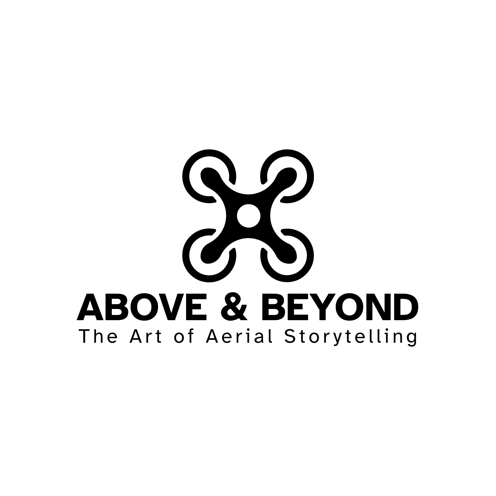

Candi Borobudur, Jawa Tengah
Candi Buddha terbesar di dunia yang menawarkan pemandangan matahari terbit yang megah dan arsitektur bersejarah.
Fasilitas:
- Pemandu Wisata
- Area Parkir Luas
- Toilet Umum
- Museum

Candi Buddha terbesar di dunia yang menawarkan pemandangan matahari terbit yang megah dan arsitektur bersejarah.

Destinasi ikonik Indonesia yang terkenal dengan garis pantai yang panjang, ombak untuk berselancar, dan matahari terbenam.